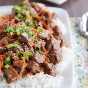
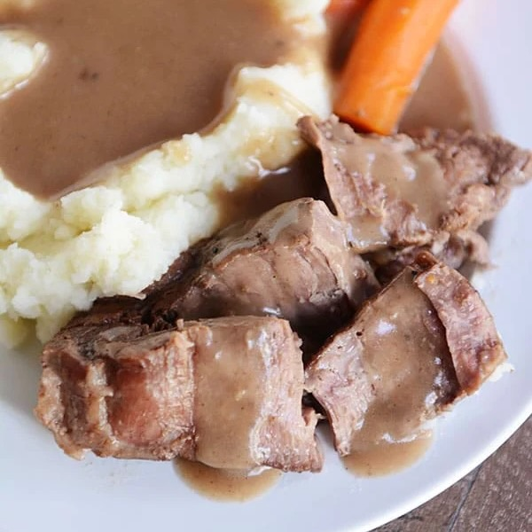

Cooking with Amanda
HOME
ABOUT
CONTACT
COOKING BLOGS
Slow Cooker
Slow Cooker Korean Beef

BBQ Pulled Pork Sandwiches
Tortellini Sausage Potato Soup
Ultimate Beef Stroganoff
Perfect Pot Roast & Gravy

Creamy Chicken & Wild Rice Soup
Slow Cooker Lasagna
Slow Cooker Tomato Basil Soup
Honey Sesame Chicken
Creamy Green Chili Chicken Bake
French Dip Sandwiches
Slow Cooker Taco Chicken